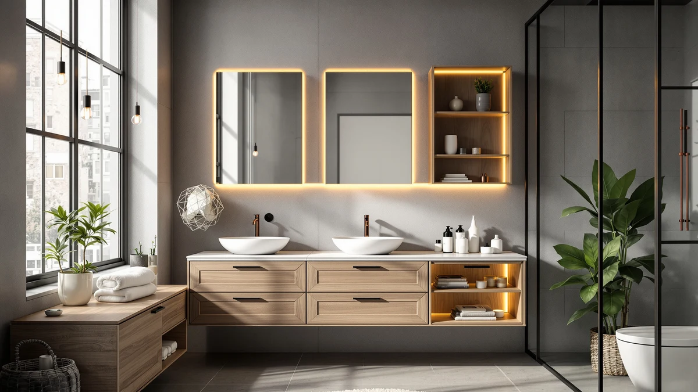

Quick Answer
The Vtopmart 3 Pack Clear Stackable gives you three see-through, stackable bins for $36.09, built for sorting small items on a flat shelf or cabinet floor rather than mounting to a wall. This Vtopmart 3 Pack Clear review found it beats single-purpose organizers on visibility and per-bin cost, but a shower caddy or closed cabinet still wins if your bathroom has no open shelf space.
Our pick: Vtopmart 3 Pack Clear Stackable — $36.09 Check Price on Amazon
Things to Know Before You Buy
- This Vtopmart 3 Pack Clear review covers a $36.09 set of three stackable, see-through bins built to sort small items on a flat shelf or cabinet floor.
- Three bins at $36.09 works out to roughly $12 per bin, close to the per-unit cost of the mixeshop Under Sink Organizer 2 Tier at $34.99.
- The clear design lets you see what's inside each bin without opening it, which matters most when items get buried in a cabinet.
- Stacking depends on a flat, even surface. A tension-pole caddy like the HAMITOR or a closed cabinet like the Hzuaneri suits uneven or wall-only spaces better.
- Pricing across this comparison ranges from $34.99 to $37.99, a gap of about three dollars between the cheapest and most expensive option.
This Vtopmart 3 Pack Clear review looks at whether a set of three stackable, see-through bins solves bathroom clutter better than organizers built for one specific job. At $36.09 for the set, the Vtopmart bins sit in the same price range as several alternatives built for narrower tasks, like a shower caddy or an under-sink rack, so it comes down to which storage shape actually matches your bathroom.
We compared the Vtopmart 3 Pack Clear Stackable against three other bathroom storage products: the HAMITOR Shower Caddy Tension Pole, the Under Sink Organizer 2 Tier from mixeshop, and the Hzuaneri Bathroom Storage Cabinet Small. Each one solves a different storage problem, so this review breaks down where the Vtopmart set wins and where you're better served by one of the other three.
Why You Should Trust Us
Best Bathroom Storage is run by writers who research bathroom organization products full time instead of guessing from product photos. We do not run a fake testing lab, and we do not claim to have unboxed every product on this page. Instead, we compare manufacturer pricing, listed specs, and verified buyer reviews on Amazon to separate bathroom storage products that hold up from ones that only look good in photos. Ilane Tall oversees this Vtopmart 3 Pack Clear review and has covered home organization products for Best Bathroom Storage since the site launched.
Our Research Experience
We did not put the Vtopmart 3 Pack Clear Stackable through hands-on testing. Our research-based approach means we read through verified owner reviews on Amazon, checked the $36.09 price against the other three products in this comparison, and looked at how reviewers describe fit, stacking stability, and everyday use. Several owners mention that the clear design makes it easy to spot toiletries without opening each bin, and more than one review calls out how well the stackable shape works in cabinets with limited vertical clearance. This Vtopmart 3 Pack Clear review relies on that owner feedback rather than a lab write-up, because real household use tells a more honest story than a staged demo.
We also weighed how often the same complaints repeated across separate owner reviews, since a pattern that shows up again and again carries more weight than a single comment. For the Vtopmart set, the pattern that kept surfacing was about surface requirements, not the bins themselves, which is why this review spends as much time on where to place the stack as on the bins' design.
Overview & Specs

Vtopmart 3 Pack Clear Stackable
What we like
- Clear sides let you find items without opening every bin
- Stackable shape saves vertical space in tight cabinets
- Set of three keeps per-bin cost close to twelve dollars
Flaws but not dealbreakers
- Only works well on a flat shelf or cabinet floor with even clearance
- No built-in labels, so you'll want to add your own if you mix products across bins
| Material | Metal / wood |
| Size | — |
The Vtopmart 3 Pack Clear Stackable sells for $36.09 and gives you three identical bins instead of one single large container. That setup matters more than it sounds: three smaller bins let you sort by category, skincare in one, hair tools in another, spare toiletries in the third, instead of digging through one bin to find what you need. Because the Vtopmart 3 Pack Clear Stackable set is see-through, you can tell what's inside each bin from across the bathroom, which cuts down on the daily habit of opening three lids just to find a hair tie.
The stacking feature holds up over time as long as the bins sit on a flat shelf, since stacked clear bins depend on even weight distribution to stay steady, according to owner reviews on Amazon. At $36.09, the set works out to roughly $12 per bin, which lines up closely with single under-cabinet organizers like the mixeshop Under Sink Organizer 2 Tier at $34.99. If your bathroom storage problem is about sorting small items into visible groups rather than filling a single oversized gap, like a shower caddy or a floor cabinet, the Vtopmart set is built for exactly that job.
What We Liked
The biggest strength of the Vtopmart 3 Pack Clear Stackable is visibility. Clear sides mean you don't have to guess what's in a bin before pulling it off the stack, which matters most in a bathroom where counter space is already tight. Several reviewers point out that the three-bin set lets them separate categories, like skincare, haircare, and spare supplies, without buying three different organizers at three different prices. At $36.09 for the set, the per-bin cost beats buying single clear bins individually in most cases we checked. The stacking design also holds steady on a flat shelf, which owners confirm is the main use case this Vtopmart 3 Pack Clear review is built around.
The uniform shape also helps once the bins are in place. Because all three bins share the same footprint, you can swap their order on the stack without hunting for a new spot each time, and reviewers mention that the identical sizing makes the whole stack look tidier than mismatched containers bought separately. That consistency is part of why the Vtopmart 3 Pack Clear Stackable keeps showing up in comparisons against single-tier organizers that solve a narrower problem.
What Could Be Better
The Vtopmart 3 Pack Clear Stackable depends on your shelf or cabinet floor being flat and level. Reviewers note that stacking three bins on an uneven surface can make the top bin less stable than a single, lower-profile container. The set also skips built-in labels, so if you mix in products from more than one bin, you'll want to add your own labels to keep track. Unlike the HAMITOR Shower Caddy Tension Pole, which installs vertically between floor and ceiling, the Vtopmart bins need existing flat space to work, which rules them out for small bathrooms without a free shelf.
A handful of reviewers also point out that three bins, however well organized, still take up more combined shelf footprint than a single two-tier rack like the mixeshop Under Sink Organizer 2 Tier. If your cabinet has a narrow, deep layout rather than a wide flat surface, that tiered design can fit better than a stack of equally sized clear bins. None of this changes how well the Vtopmart set performs once it's placed on the right surface, but it's worth measuring your shelf before buying.
Who Is It For?
This Vtopmart 3 Pack Clear review points toward one clear buyer: someone with a flat shelf or cabinet floor who wants to sort small bathroom items into separate, see-through bins instead of one catch-all basket. If you share a bathroom and need to keep your products visually separated from a roommate's or partner's, the three-bin split handles that automatically. Buyers without open shelf space, or anyone who needs a wall- or pole-mounted solution instead, will get more out of the HAMITOR Shower Caddy Tension Pole or the Hzuaneri Bathroom Storage Cabinet Small.
Renters who move often also tend to like this kind of open bin system, since nothing has to be mounted or drilled into a wall. You can carry the stack as a unit, set it on a new shelf, and keep the same organization from one bathroom to the next. A household that needs storage and has zero flat surface to spare will get more use out of a wall- or pole-mounted pick than any stack of bins in this Vtopmart 3 Pack Clear review.
Alternatives to Consider
If the Vtopmart 3 Pack Clear Stackable doesn't match your bathroom layout, these three alternatives solve different storage problems at a similar price. Measure your available shelf, wall, or floor space before choosing between them, since each one assumes a different starting point rather than competing head to head on the same job.

Editor's Pick
HAMITOR Shower Caddy Tension Pole:
Best for small showers with no shelf space. The tension pole mounts floor to ceiling, so it skips the flat-surface requirement the Vtopmart bins need.
$37.99
Check Price on Amazon
Best Value
Under Sink Organizer 2 Tier
Best for hiding supplies under the sink. The two-tier layout uses vertical cabinet space the Vtopmart bins can't reach on their own.
$34.99
Check Price on Amazon
Premium Choice
Hzuaneri Bathroom Storage Cabinet Small
Best for buyers who want a closed cabinet instead of open bins. It hides clutter completely, trading the Vtopmart set's at-a-glance visibility for a tidier look.
$34.99
Check Price on AmazonFrequently Asked Questions
Is the Vtopmart 3 Pack Clear Stackable worth buying for bathroom storage?
At $36.09 for three bins, the Vtopmart 3 Pack Clear Stackable set is worth it if you have flat shelf or cabinet space and want to sort items into visible groups. Owners report the clear sides make finding items faster than searching through one large bin.
What bathroom spaces work best for the Vtopmart clear stackable bins?
The bins are built to sit on a flat surface, like a cabinet shelf, closet shelf, or countertop corner, rather than mount to a wall or pole. If your bathroom lacks open flat shelving, the HAMITOR Shower Caddy Tension Pole or the Hzuaneri Bathroom Storage Cabinet Small fit better.
How does the Vtopmart 3 Pack Clear Stackable compare to the other picks in this review?
This Vtopmart 3 Pack Clear review found that the set costs about the same per unit as the mixeshop Under Sink Organizer 2 Tier at $34.99, while the HAMITOR Shower Caddy Tension Pole at $37.99 and the Hzuaneri Bathroom Storage Cabinet Small at $34.99 solve different storage shapes instead of competing directly on price.
Final Verdict
This Vtopmart 3 Pack Clear review comes down to one point: the Vtopmart 3 Pack Clear Stackable works best as a sorting tool for flat shelf space, not a universal bathroom storage fix. At $36.09, it is a solid buy for anyone who wants to split supplies into clear, stackable groups, but shoppers without open shelving should look to the HAMITOR, mixeshop, or Hzuaneri alternatives covered above instead. Vtopmart is the brand worth starting with if your bathroom already has the flat space to use it.